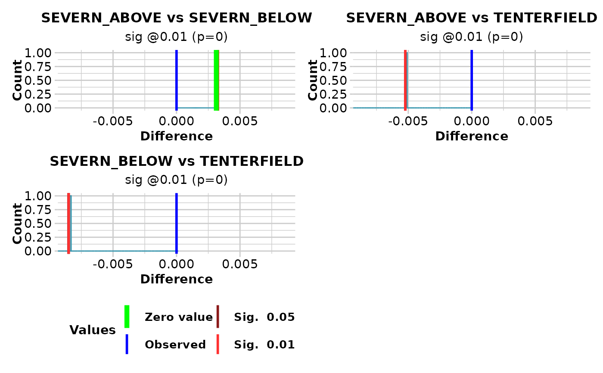

Tests the difference in heterozygosity between populations taken pairwise
gl.test.heterozygosity.RdCalculates the expected heterozygosities for each population in a genlight object, and uses re-randomization to test the statistical significance of differences in heterozygosity between populations taken pairwise.
gl.test.heterozygosity(
x,
nreps = 100,
alpha1 = 0.05,
alpha2 = 0.01,
plot.out = TRUE,
max_plots = 6,
plot_theme = theme_dartR(),
plot_colors = two_colors,
save2tmp = FALSE,
verbose = NULL
)Arguments
- x
A genlight object containing the SNP genotypes [required].
- nreps
Number of replications of the re-randomization [default 1,000].
- alpha1
First significance level for comparison with diff=0 on plot [default 0.05].
- alpha2
Second significance level for comparison with diff=0 on plot [default 0.01].
- plot.out
If TRUE, plots a sampling distribution of the differences for each comparison [default TRUE].
- max_plots
Maximum number of plots to print per page [default 6].
- plot_theme
Theme for the plot. See Details for options [default theme_dartR()].
- plot_colors
List of two color names for the borders and fill of the plots [default two_colors].
- save2tmp
If TRUE, saves any ggplots and listings to the session temporary directory (tempdir) [default FALSE].
- verbose
Verbosity: 0, silent or fatal errors; 1, begin and end; 2, progress log; 3, progress and results summary; 5, full report [default NULL, unless specified using gl.set.verbosity].
Value
A dataframe containing population labels, heterozygosities and sample sizes
Details
Function's output
If plot.out = TRUE, plots are created showing the sampling distribution for the difference between each pair of heterozygosities, marked with the critical limits alpha1 and alpha2, the observed heterozygosity, and the zero value (if in range).
Plots and table are saved to the temporal directory (tempdir) and can be
accessed with the function gl.print.reports and listed with the
function gl.list.reports. Note that they can be accessed only
in the current R session because tempdir is cleared each time that the R
session is closed.
Examples of other themes that can be used can be consulted in
Examples
out <- gl.test.heterozygosity(bandicoot.gl, nreps=10, verbose=3, plot.out=TRUE)
#> Processing genlight object with SNP data
#> Warning: genlight object contains monomorphic loci which will be factored into heterozygosity estimates
#>
#>
#> Starting gl.test.heterozygosity
#>
#> Calculating the sampling distributions for pairwise differences between populations by re-randomization
#> Please be patient .... go have a coffee
#> Cycling through the 10 pairs of populations
#> Plotting sampling distributions
#>

 #> pop1 pop2 diff significance pval
#> 1 NSW QLD 0.007525 sig @0.01 0.0
#> 2 NSW SA 0.005484 sig @0.01 0.0
#> 3 NSW VIC 0.002705 non-sig @0.05 0.2
#> 4 NSW WA 0.001447 non-sig @0.05 0.3
#> 5 QLD SA -0.002041 sig @0.01 0.0
#> 6 QLD VIC -0.004820 sig @0.01 0.0
#> 7 QLD WA -0.006078 sig @0.01 0.0
#> 8 SA VIC -0.002779 non-sig @0.05 0.4
#> 9 SA WA -0.004037 non-sig @0.05 0.2
#> 10 VIC WA -0.001258 non-sig @0.05 0.3
#> Completed: gl.test.heterozygosity
#>
#> pop1 pop2 diff significance pval
#> 1 NSW QLD 0.007525 sig @0.01 0.0
#> 2 NSW SA 0.005484 sig @0.01 0.0
#> 3 NSW VIC 0.002705 non-sig @0.05 0.2
#> 4 NSW WA 0.001447 non-sig @0.05 0.3
#> 5 QLD SA -0.002041 sig @0.01 0.0
#> 6 QLD VIC -0.004820 sig @0.01 0.0
#> 7 QLD WA -0.006078 sig @0.01 0.0
#> 8 SA VIC -0.002779 non-sig @0.05 0.4
#> 9 SA WA -0.004037 non-sig @0.05 0.2
#> 10 VIC WA -0.001258 non-sig @0.05 0.3
#> Completed: gl.test.heterozygosity
#>